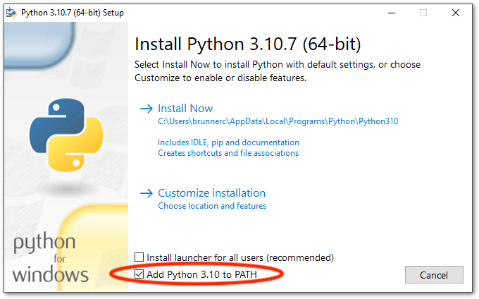
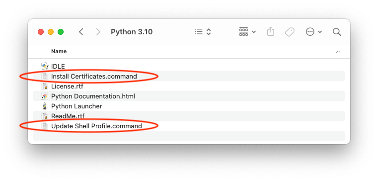

Setting up Python for EEG analysis
Installing Python
The official installer, which is available for Windows and macOS, is the easiest way to install Python. If you use Linux, chances are that Python is already installed (if not, use the package manager to install it).
When running the installer on Windows, make sure to check the option “Add Python to PATH” – by default this setting is disabled. I strongly recommend to use the default values for all other settings. If you do not have administrator privileges, you can uncheck the option “Install launcher for all users (recommended)”.

On macOS, make sure to run both “Install certificates” and “Update Shell Profile” commands available in the “Python 3.10” application folder after the installation is complete:

Anaconda, a distribution with tons of pre-installed packages specifically tailored towards scientific computing, provides yet another way to install Python. However, since the official installers work really well, I would only use Anaconda if you have a specific reason.
On macOS, Python can also be installed with Homebrew. I will not describe this variant here, but I will mention that running brew install python in a terminal is all it takes.
Additional packages
Although Python ships with an extensive standard library, most scientific packages are not part of Python itself. However, installing additional Python packages is not difficult with the package manager pip, which is bundled with every Python installation. Note that you need to open a terminal to use pip (for example, Command Prompt on Windows or Terminal on macOS).
To install a package, you need to know its name. Therefore, the first step is to determine if a particular package is available in the so-called Python Package Index (or short PyPI). Currently, the only way to find out is to search directly on the website.
If the package is available, you can install it with the following command in your terminal (replace <package> with the actual package name):
pip install <package>The following packages are useful for scientific computing in general and EEG processing in particular:
- NumPy provides a multi-dimensional array data type, which is the basis for almost all scientific packages.
- Pandas provides a flexible data frame type similar to the one available in R.
- SciPy contains numerous algorithms for scientific computing.
- Matplotlib is the most popular package to create all kinds of plots in Python.
- Scikit-learn is a powerful machine learning package for Python.
- MNE is a package for EEG/MEG analysis.
- MNELAB is a graphical user interface for MNE.
- IPython provides an enhanced interactive Python experience.
- Python-Picard is an extremely fast and efficient ICA implementation.
I recommend that you install all of these packages right now so you can use them in your EEG analyses.
Package names are case-insensitive, so for example pip install NumPy and pip install numpy should both work (usually, package names are all lower-case though).
Housekeeping
It is generally a good idea to use the most recent version of Python. If a new Python version becomes available (you might want to check the official Python website once in a while), install it as previously explained. You can even have multiple versions of Python installed on your system if you want (but usually you only need the latest version).
In addition to Python itself, you probably also want to keep all installed packages up to date. Package updates are independent of new Python releases, so you should check for new package versions more frequently (for example, once a week). You can use pip to get a list of all outdated packages:
pip list --outdatedThe following command upgrades a package to its latest version (replace <package> with the actual package name):
pip install -U <package>Unfortunately, you need to upgrade each outdated package individually.
You can also completely remove a specific package (again, replace <package> with the actual package name):
pip uninstall <package>Visual Studio Code
A text editor or integrated development environment is an essential tool for writing Python programs. Good text editors include support for syntax highlighting, indentation, line numbers, linting, code inspection, and more.
I recommend Visual Studio Code if you have never used Python before. However, feel free to try other editors such as PyCharm, which also provides a great Python development environment.
If you decide to install Visual Studio Code, there are two things you should tweak for a great Python editing experience:
- Click on the Extensions section in the left sidebar, search for “Python”, and install the official Python extension.
- I recommend that you enable PEP8 style checking. Open the Command Palette (CtrlShiftP on Windows and Linux, ⌘ShiftP on macOS) and type “linter”. Click on the entry “Python: Select Linter” and choose “flake8”. If Visual Studio Code asks if you want to install the flake8 tool, click on “Install” (alternatively, you can always
pip install flake8at any time).
That’s it, you are now ready to start working with Python!